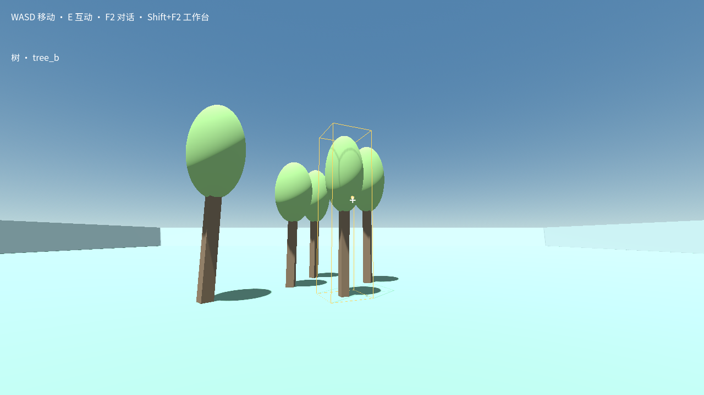
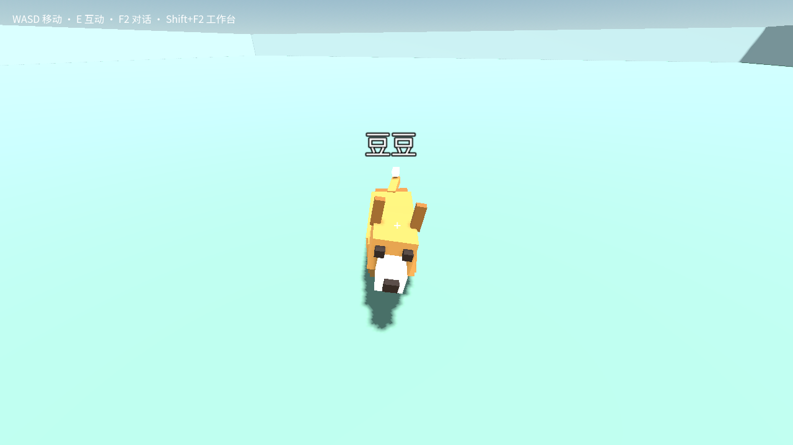
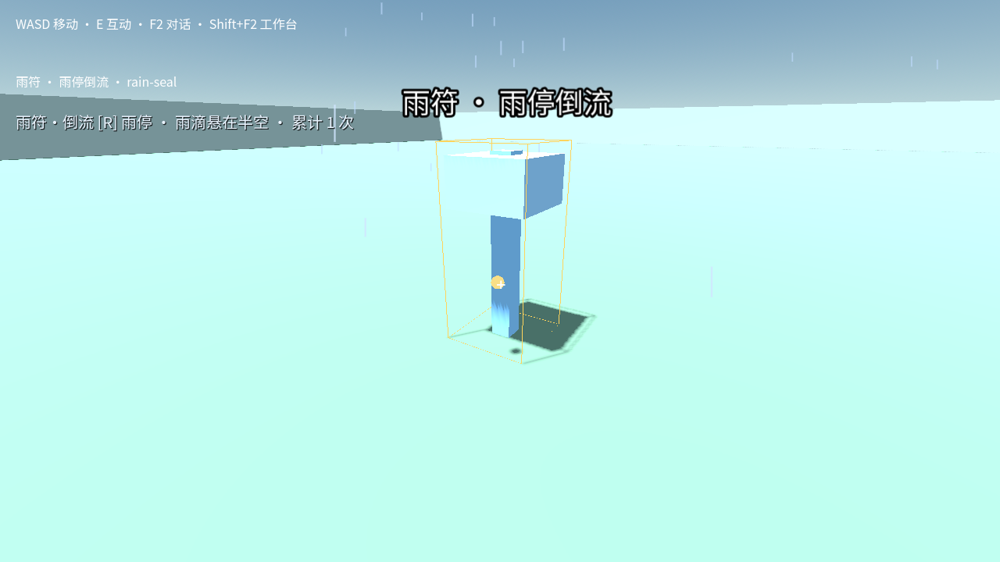
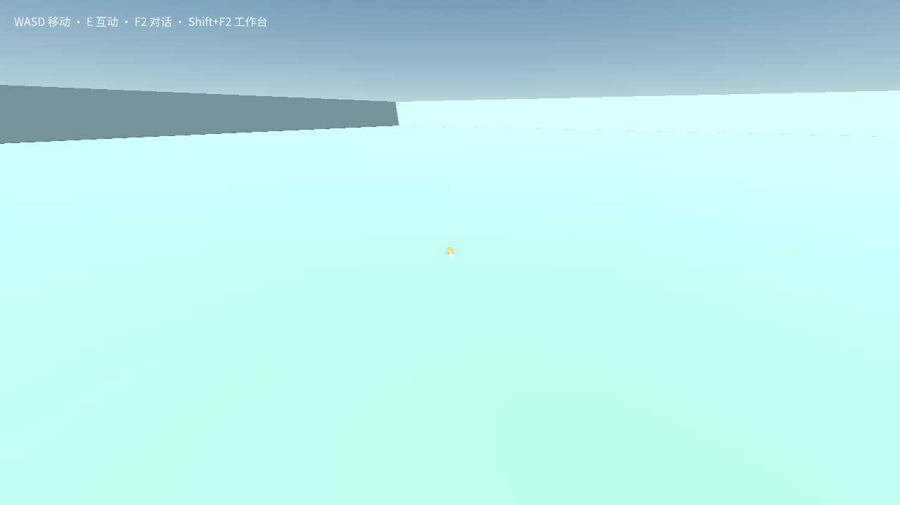

环境：树我想生成一些树。11/40 次请求；检查、采用、保存重开通过多棵带阴影的几何树，外形简单；尚未测试花草和连续修改。本轮新生成 · 冻结成品 43203d8e / preview.12
宠物：狗我希望有条宠物狗。原样本 10/10 请求额度停止后检查通过；本轮观察新增模型请求 0小狗能走近玩家，外观为简单方块。已采用、保存重开；白色博美改形尚未验证。生成成品 940c5a84；截图观察成品 43203d8e
战斗：怪物给我生成一些怪物。5/40 次请求；等待两项澄清，时间停止，未交付这是正式空白世界，图中没有怪物。测试控制器缺少答题入口；不能据此认定模型不会做怪物。另有 10 请求旧试验，写入源码后用尽额度、未检查，单独保留。本轮新隔离试验 · 冻结成品 43203d8e
技能：雨停与倒流我想要《惊天魔盗团》经典场景中让雨停在半空、然后倒流向上的技能。17/40 次请求；已采用、重开并触发雨停和倒流阶段截图为雨停阶段。雨丝稀薄、对比低，环境空旷，尚无电影观感；逐滴轨迹及遮挡没有完成专项验收。本轮新生成 · 冻结成品 43203d8e / preview.12
驾驶：歼20我想要驾驶歼20。4/40 次请求；等待四项澄清，时间停止，未交付这是正式空白世界，尚无飞机。模型询问飞机交付方式、街机或拟真手感、视角及附加功能；测试控制器无法答复，驾驶能力尚未验证。本轮新隔离试验 · 冻结成品 43203d8e
城市：奥格瑞玛我想复刻奥格瑞玛。5/40 次请求；等待范围及实现方式澄清，时间停止，未交付这是正式空白世界，尚无城市。模型询问复刻范围与建筑实现方式；测试控制器无法答复。技术实现选择应由 AI 承担，后续会调整这类提问。本轮新隔离试验 · 冻结成品 43203d8e